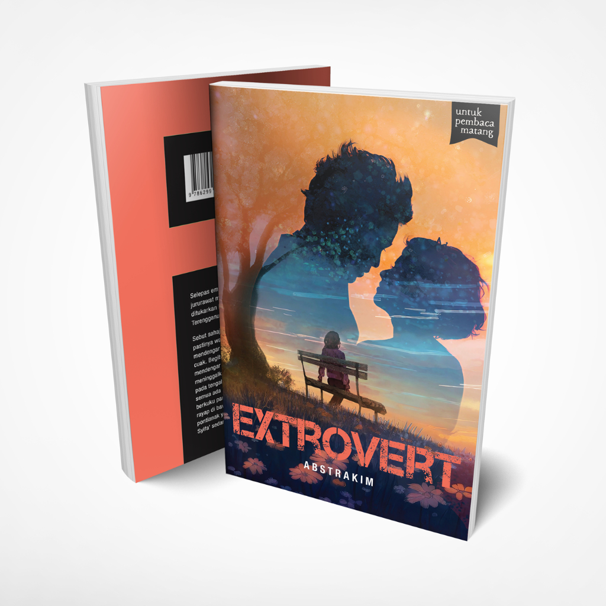
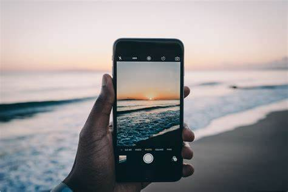
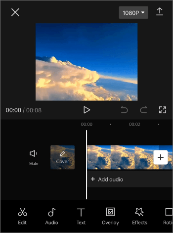
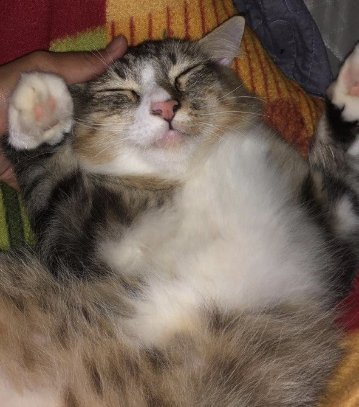

MY HOBBIES

Reading Novels
I enjoy immersing myself in different worlds and stories through novels. Reading is a great escape and fuels my imagination.

Photography
Capturing moments and beauty through the lens is one of my passions. I love experimenting with lighting, angles, and perspectives.

Videography & Video Editing
Creating and editing videos allows me to bring stories to life. I enjoy the creative process of making each video unique and engaging.

Playing with Cats
Spending time with cats brings me so much joy. I have few at home, and this guy's name's Loki. Their playful and curious nature is always entertaining.